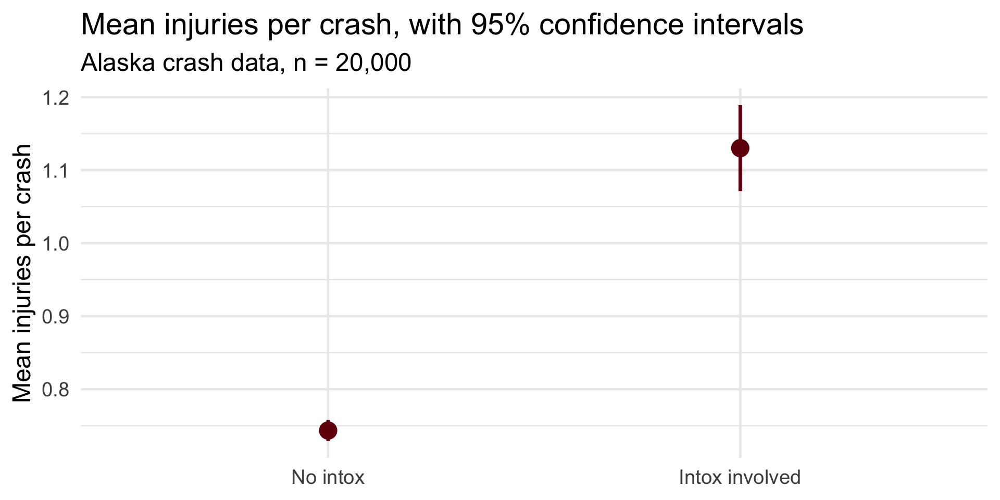

[1] 0CRJU 705 · Session 7 · Fall 2026
Topic: the full pipeline, on data nobody cleaned for you
Learning goals: run import → tidy → transform → visualize → test start-to-finish without a template; diagnose what’s wrong with a dataset you’ve never seen; commit to a final-project dataset you can defend.
Due this week: your final-project dataset selection (details at the end).
The folk wisdom in data work: 80% of the time goes to getting and preparing data, 20% to analyzing it. Six sessions in, you can now verify this yourself.
Every dataset in this course so far arrived clean because I cleaned it. That subsidy ends today.
| Step · learned in | The job | Tools |
|---|---|---|
| Import · Session 5 | get data into R intact | read_csv(), read_excel(), col_types, mdy() |
| Tidy · Session 4 | one row = one observation | pivot_longer(), pivot_wider() |
| Transform · Session 3 | filter, derive, summarize | filter(), mutate(), summarize() |
| Visualize · Session 2 | see the shape and the pattern | ggplot() |
| Model / test · Sessions 5–6 | formal inference | t.test(), ttestBF(), prop.test() |
You learned the first four steps in reverse order. Today you run the whole thing left to right for the first time.
Back to the Alaska crash data — but this time the date is handled at the door:
[1] 020,000 crashes, 2022–2026. Two roads to a real date column — col_types up front, or mdy() after. Either way: verify the parse.
The file has no “night” or “weekend” column. Files never do — you build the variables your question needs:
# A tibble: 2 × 2
night n
<lgl> <int>
1 FALSE 14972
2 TRUE 5028Night hours hold 25% of all crashes — but 39% of intoxication-involved ones. One mutate() made that pattern visible.
The Homework 5 question, back for a verdict: do crashes involving an intoxicated driver injure more people?
# A tibble: 2 × 4
intox_any crashes mean_inj sd_inj
<dbl> <int> <dbl> <dbl>
1 0 18455 0.743 0.997
2 1 1545 1.13 1.18 0.74 vs. 1.13 injured people per crash. Point estimates — you know by now that’s not the final word.
inj_summary <- crashes |>
mutate(intox_group = factor(intox_any, labels = c("No intox", "Intox involved"))) |>
summarize(n = n(), mean_inj = mean(injuries), sd_inj = sd(injuries),
.by = intox_group) |>
mutate(se = sd_inj / sqrt(n),
ci_lo = mean_inj - 1.96 * se,
ci_hi = mean_inj + 1.96 * se) # Session 5, by hand
ggplot(inj_summary, aes(intox_group, mean_inj)) +
geom_pointrange(aes(ymin = ci_lo, ymax = ci_hi),
color = crju_colors["garnet"], linewidth = 1.2, size = 1) +
labs(title = "Mean injuries per crash, with 95% confidence intervals",
subtitle = "Alaska crash data, n = 20,000",
x = NULL, y = "Mean injuries per crash")
Welch Two Sample t-test
data: injuries by intox_any
t = -12.489, df = 1732.6, p-value < 0.00000000000000022
alternative hypothesis: true difference in means between group 0 and group 1 is not equal to 0
95 percent confidence interval:
-0.4474533 -0.3259893
sample estimates:
mean in group 0 mean in group 1
0.7433758 1.1300971 Same gotcha as Homework 5: R computes group 0 − group 1, so the negative signs mean the intoxication group is higher.
BayesFactor insists the grouping variable be a factor — so we hand it one:
Bayes factor analysis
--------------
[1] Alt., r=0.707 : 2.133904e+43 ±0%
Against denominator:
Null, mu1-mu2 = 0
---
Bayes factor type: BFindepSample, JZSBF10 ≈ 2 × 1043: the data are astronomically better predicted by “the groups differ” than by “no difference.”
The rest of the session is Lab 7 — the same pipeline, run twice:
.R script from minute one — it becomes Homework 7Your final-project dataset, formally declared in Homework 7 (before noon Tuesday):
Torn between two? Submit both — we settle it at your Session 8 checkpoint. Full requirements: final project page.
CRJU 705 · Session 7